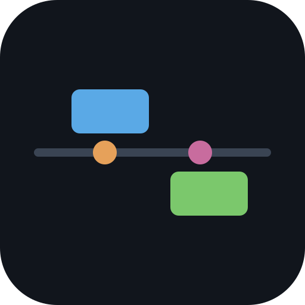

Download EpochloreThe offline desktop app — full functionality, native file access, works without a server.
Downloadresources.neu — keep them together in the same folder.
libwebkit2gtk; mark the file executable (chmod +x) before running.v* tag is pushed —
see all releases.